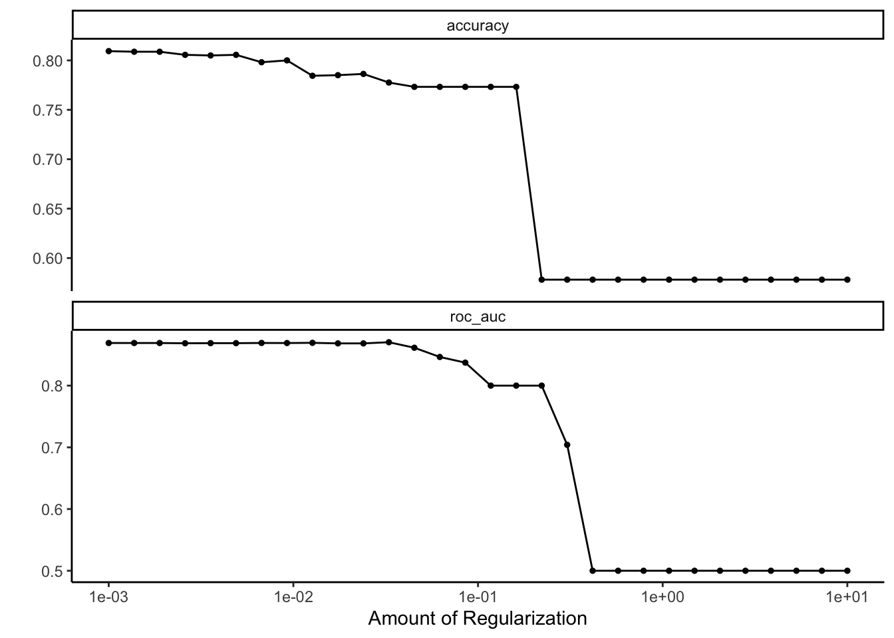

This script uses tuberculosis(tb) as the outcome of interest and fits the following models to the analysis data:
Null
LASSO
Random Forest
Support Vector Machine
It compares the models, and then finally fits the “best” model to the test data.
Each model will follow this process: 1. Model Specification 2. Workflow Definition 3. Tuning Grid Specification 4. Tuning Using Cross-Validation and the tune_grid() function 5. Identify Best Model 6. Model Evaluation
defaultW <-getOption("warn") options(warn =-1) # load the relevant tidymodels librarieslibrary(here) #for data loading/saving
here() starts at /Users/sandi/MADA-course/pKaggwa-mada-project
── Conflicts ────────────────────────────────────────── tidyverse_conflicts() ──
✖ dplyr::filter() masks stats::filter()
✖ dplyr::lag() masks stats::lag()
ℹ Use the conflicted package (<http://conflicted.r-lib.org/>) to force all conflicts to become errors
Loading required package: Matrix
Attaching package: 'Matrix'
The following objects are masked from 'package:tidyr':
expand, pack, unpack
Loaded glmnet 4.1-8
library(doParallel) #for parallel backend for tuning processes
Loading required package: foreach
Attaching package: 'foreach'
The following objects are masked from 'package:purrr':
accumulate, when
Loading required package: iterators
Loading required package: parallel
library(ranger) #for random forest modelslibrary(yardstick)library(probably) #install.packages('probably')
Attaching package: 'probably'
The following objects are masked from 'package:base':
as.factor, as.ordered
#Path to data. Note the use of the here() package and not absolute pathsdata_location <- here::here("data","processed-data","data2.rds")#load data# Loading the needed datasetmadaproject <-readRDS(data_location)head(madaproject)
# A tibble: 6 × 9
oxygencons Asthma feverstatus Weightloss BloodinSputum cxrconclusion_chestxray
<dbl> <fct> <fct> <fct> <fct> <fct>
1 97 NO YES YES YES POSITIVE
2 91 NO YES YES NO POSITIVE
3 94 NO YES YES YES POSITIVE
4 61 NO YES YES NO POSITIVE
5 98 NO YES YES NO POSITIVE
6 80 NO YES YES YES POSITIVE
# ℹ 3 more variables: homefuel <chr>, hivstatus <fct>, tb <fct>
Before I start doing some model building I split the data into training and testing datasets.
# evaluate class imbalance madaproject %>%count(tb)
# A tibble: 2 × 2
tb n
<fct> <int>
1 YES 951
2 NO 1343
I see that i have more people without tb
Let me look at the levels
levels(madaproject$tb)
[1] "YES" "NO"
I see that NO is predicted first but I want yes
# If "YES" is not already the first level, use relevel() to interchange the levelsmadaproject$tb <-relevel(madaproject$tb, ref ="YES")# Check the levels again to confirm the changelevels(madaproject$tb)
[1] "YES" "NO"
Now I see that YES is the first level
Now I will split the data into training and testing
#Set a seedrngseed =5002set.seed(rngseed)# Data splits , train, testdata_split <-initial_split(madaproject, prop =0.7)train <-training(data_split)test <-testing(data_split)ntrain =nrow(train)ntest =nrow(test)
FITTING OF ALL MODELS Fitting the null model
#Fit a null model to the outcome tblogistic_model <-logistic_reg() %>%set_engine("glm")null_model <- logistic_model %>%fit(tb ~1, data = train)#Compute acurrancy for the null modelmetrics_null <- null_model %>%predict(train) %>%bind_cols(train) %>%metrics(truth = tb, .pred_class)#Print accurancy for the null modelprint(metrics_null)
# A tibble: 2 × 3
.metric .estimator .estimate
<chr> <chr> <dbl>
1 accuracy binary 0.578
2 kap binary 0
LASSO MODEL TUNING
set.seed(rngseed)# Make sure you set reference level (the outcome you are NOT interested in)levels(madaproject$tb)
[1] "YES" "NO"
data_cv10 <-vfold_cv(train, v =10)# Logistic LASSO Regression Model Speclogistic_lasso_spec_tune <-logistic_reg() %>%set_engine('glmnet') %>%set_args(mixture =1, penalty =tune()) %>%set_mode('classification')# Recipelogistic_rec <-recipe(tb ~ ., data = train) %>%step_normalize(all_numeric_predictors()) %>%step_dummy(all_nominal_predictors())# Workflow (Recipe + Model)log_lasso_wf <-workflow() %>%add_recipe(logistic_rec) %>%add_model(logistic_lasso_spec_tune) # Tune Model (trying a variety of values of Lambda penalty)lasso_grid <-grid_regular(penalty(range =c(-3, 1)), levels =30)tune_outputlasso <-tune_grid( log_lasso_wf, # workflowresamples = data_cv10, # cv foldsmetrics =metric_set(roc_auc,accuracy),control =control_resamples(save_pred =TRUE),grid = lasso_grid # lasso penalty grid defined above)# Visualize Model Evaluation Metrics from Tuningautoplot(tune_outputlasso) +theme_classic()

# Select Penaltybest_se_penalty <-select_by_one_std_err(tune_outputlasso, metric ='roc_auc', desc(penalty)) # choose penalty value based on the largest penalty within 1 se of the lowest CV roc_aucbest_se_penalty
# Save the table as a filefigure_file =here("results","figures", "Lasso_ROCCURVE.png")ggsave(filename = figure_file, plot=Lasso_ROCCURVE)
Saving 7 x 5 in image
set.seed(rngseed)# Compute confusion matrixpredictions <-predict(final_fit_lasso, new_data = train)pred_train <-bind_cols(train, predictions)conf_matlasso <- pred_train %>%conf_mat(truth = tb, estimate = .pred_class)# Convert confusion matrix to data framelassoconf_table<-as.data.frame(conf_matlasso$table)# Create a flextable from the data frame#lassoconf_table <- flextable(conf_dflasso)# Print the tableprint(lassoconf_table)
Prediction Truth Freq
1 YES YES 654
2 NO YES 23
3 YES NO 325
4 NO NO 603
# Save the table as a filesummarytable_file <-here("results","tables", "lassoconf_table.rds")saveRDS(lassoconf_table, file = summarytable_file)
Now I will do Random Forest
# Random Forest Model Specrf_spec_tune <-rand_forest() %>%set_mode("classification") %>%set_engine("ranger") # or any other suitable engine# Reciperf_rec <-recipe(tb ~ ., data = train)# Workflow (Recipe + Model)rf_wf <-workflow() %>%add_recipe(rf_rec) %>%add_model(rf_spec_tune) # Tune Model (trying a variety of values of mtry and trees)rf_grid <-grid_regular(mtry(range =c(1,7)), # adjusting based on number of predictorstrees(range =c(1, 21)), # adjust the range as neededlevels =5# adjust the number of levels as needed)tune_outputrf <-tune_grid( rf_wf, # workflowresamples = data_cv10, # cv foldsmetrics =metric_set(roc_auc),control =control_resamples(save_pred =TRUE),grid = rf_grid, # parameter grid defined above)
Warning: No tuning parameters have been detected, performance will be evaluated
using the resamples with no tuning. Did you want to [tune()] parameters?
# Visualize Model Evaluation Metrics from Tuning#autoplot(tune_outputrf)# Fit Final Modelfinal_fit_rf <-finalize_workflow(rf_wf, select_best(tune_outputrf, "roc_auc")) %>%fit(data = train)
# Save the table as a filefigure_file =here("results","figures", "rf_ROCCURVE.png")ggsave(filename = figure_file, plot=rf_ROCCURVE)
Saving 7 x 5 in image
set.seed(rngseed)# Compute confusion matrixpredictions <-predict(final_fit_rf, new_data = train)pred_train <-bind_cols(train, predictions)conf_matrf <- pred_train %>%conf_mat(truth = tb, estimate = .pred_class)# Convert confusion matrix to data framerfconf_table <-as.data.frame(conf_matrf$table)# Create a flextable from the data frame#rfconf_table <- flextable(conf_dfrf)# Print the tableprint(rfconf_table)
Prediction Truth Freq
1 YES YES 619
2 NO YES 58
3 YES NO 219
4 NO NO 709
# Save the table as a filesummarytable_file <-here("results","tables", "rfconf_table.rds")saveRDS(rfconf_table, file = summarytable_file)
Using Support Vector Machine
# Support Vector Machine Model Specsvm_spec_tune <-svm_poly() %>%set_mode("classification") %>%set_engine("kernlab") # or any other suitable engine for SVM# Recipesvm_rec <-recipe(tb ~ ., data = train)# Workflow (Recipe + Model)svm_wf <-workflow() %>%add_recipe(svm_rec) %>%add_model(svm_spec_tune) # Tune Model (trying a variety of values of C and degree for polynomial kernel)svm_grid <-grid_regular(cost(range =c(0.1, 10)), # adjust the range as neededdegree(range =c(1, 5)), # adjust the range as neededlevels =5# adjust the number of levels as needed)tune_outputsvm <-tune_grid( svm_wf, # workflowresamples = data_cv10, # cv foldsmetrics =metric_set(roc_auc),control =control_resamples(save_pred =TRUE),grid = svm_grid # parameter grid defined above)
Warning: No tuning parameters have been detected, performance will be evaluated
using the resamples with no tuning. Did you want to [tune()] parameters?
# Fit Final Modelsvmfinal_fit <-finalize_workflow(svm_wf, select_best(tune_outputsvm , "roc_auc")) %>%fit(data = train)
# Create a data frame with model names, accuracy, and AUCmodel_perfomance_train <-data.frame(Model =c("Null Model", "Lasso Model", "Random Forest Model", "Support Vector model"), # Replace with your model namesAccuracy =c(0.5781931 , 0.7831776 , 0.8255452 , 0.7838006 ), # Replace with your accuracy valuesAUC =c(0.5 , 0.8707883 , 0.8973205 , 0.8618063 ) # Replace with your AUC values)# Print the resultsprint(model_perfomance_train)
Model Accuracy AUC
1 Null Model 0.5781931 0.5000000
2 Lasso Model 0.7831776 0.8707883
3 Random Forest Model 0.8255452 0.8973205
4 Support Vector model 0.7838006 0.8618063
# Save the table as a filesummarytable_file <-here("results","tables", "model_perfomance_train.rds")saveRDS(model_perfomance_train, file = summarytable_file)
MODEL EVALUTIONS I will fit the models again using test data and look at the results
# Null model# Compute the accuracy and AUC for null modelnull_acc <- null_model %>%predict(test) %>%bind_cols(test) %>%metrics(truth = tb, estimate = .pred_class) %>%filter(.metric %in%c("accuracy"))null_auc <- null_model %>%predict(test, type ="prob") %>%bind_cols(test) %>%roc_auc(truth = tb, .pred_YES)
#LASSO model# Compute the accuracy and AUC for model 2lasso_acc <- final_fit_lasso %>%predict(test) %>%bind_cols(test) %>%metrics(truth = tb, estimate = .pred_class) %>%filter(.metric %in%c("accuracy"))lasso_auc <- final_fit_lasso %>%predict(test, type ="prob") %>%bind_cols(test) %>%roc_auc(truth = tb, .pred_YES)
#Random model# Compute the accuracy and AUC for model 2rf_acc <- final_fit_rf %>%predict(test) %>%bind_cols(test) %>%metrics(truth = tb, estimate = .pred_class) %>%filter(.metric %in%c("accuracy"))rf_auc <- final_fit_rf %>%predict(test, type ="prob") %>%bind_cols(test) %>%roc_auc(truth = tb, .pred_YES)
#Random model# Compute the accuracy and AUC for model 2svm_acc <- svmfinal_fit %>%predict(test) %>%bind_cols(test) %>%metrics(truth = tb, estimate = .pred_class) %>%filter(.metric %in%c("accuracy"))svm_auc <- svmfinal_fit %>%predict(test, type ="prob") %>%bind_cols(test) %>%roc_auc(truth = tb, .pred_YES)
# Create a data frame with model names, accuracy, and AUC Based on test datamodel_perfomance_test <-data.frame(Model =c("Null Model", "Lasso Model", "Random Forest Model", "Support Vector model"), # Replace with your model namesAccuracy =c(0.6023222 , 0.8026125 , 0.8156749 , 0.796807), # Replace with your accuracy valuesAUC =c(0.5 , 0.8894864 , 0.8868349 , 0.882473 ) # Replace with your AUC values)# Print the resultsprint(model_perfomance_test)
Model Accuracy AUC
1 Null Model 0.6023222 0.5000000
2 Lasso Model 0.8026125 0.8894864
3 Random Forest Model 0.8156749 0.8868349
4 Support Vector model 0.7968070 0.8824730
# Save the table as a filesummarytable_file =here("results","tables", "model_perfomance_test.rds")saveRDS(model_perfomance_test, file = summarytable_file)
The evaluation of machine learning models’ performance on test data is pivotal for gauging their efficacy and generalization capabilities. In this study, conducted to assess predictive accuracy, the models were measured using metrics such as accuracy and Area Under the Curve (AUC). The Lasso, Random Forest, and Support Vector models were compared against a Null Model, with their respective performance metrics outlined. The results revealed a notable performance gap between the advanced models and the Null Model. Specifically, the Random Forest model exhibited superior performance, achieving an accuracy of 81.57% and an AUC of 0.887. In contrast, the Lasso and Support Vector models attained accuracies of 80.26% and 79.68%, with corresponding AUC values of 0.889 and 0.882, respectively.